Tuning-Carryover-and-Saturation-Hyperparameters
Tuning-Carryover-and-Saturation-Hyperparameters.RmdTunable Recipe
A big advantage of using tydymmm and a major motivation for following
the tydymodels framework is the set of tools for hyperparameter tuning.
Seting up a tunable model is made easy using the tune
function. For each parameter that we want to tune we instead of
hardcoding a value we set to tune(name_of_the_parameter).
Make sure that the names are distinct.
m_recipe <-
recipe(kpi_sales ~ ., data = mmm_imps) |>
add_role(c(mi_tv, mi_radio, mi_banners), new_role = "mi") |>
update_role(Date, new_role = "temp") %>%
update_role_requirements("temp", bake = FALSE) |>
#here we will tune the decay rate for banner but hard code max_carryover to 1 i.e. no carryover
step_geometric_adstock(mi_banners, decay = tune("banners_decay"), max_carryover = 1) |>
# we will also tune the shape parameter of the hill saturation function
step_hill_saturation(mi_banners, shape = tune("banners_shape"), max_ref = TRUE) |>
# for tv we will also tune the max carryover
step_geometric_adstock(mi_tv, decay = tune("tv_decay"), max_carryover = tune("tv_max_carryover")) |>
step_hill_saturation(mi_tv, shape = tune("tv_shape"), max_ref = TRUE) |>
step_geometric_adstock(mi_radio, decay = tune("radio_decay"), max_carryover = tune("radio_max_carryover")) |>
step_hill_saturation(mi_radio, shape = tune("radio_shape"), max_ref = TRUE)As a modeler and depending on contextual knowledge you may tune some or all the hyper-parameters of the model. In the example below we set a string assumption that impact on sale from banner ads has no carryover into the future. TV and Radio carryover will be tuned.
We define the model and workflow with the recipe in the usual manner.
m_mod <-
linear_reg() |>
set_engine("lm")
m_wflow <-
workflow() |>
add_model(m_mod) |>
add_recipe(m_recipe)Define a Tuning Grid
This is where we begin to really tap into the tydymeodels framework.
To define a grid of parameters over which we will search for an optimal
combination we will follow define a random grid over a ranges of
hyperparameters. We’ll use the grid_random function and
metric functions provided by tydymmm, shape,
max_carryover, decay. These functions can take
a range parameter to set the lower and upper limits. Setting a range
like this essentially allows for your bias or business domain knowledge
to come into play. If an range is not provided a search over the whole
domain of the function will be preformed.
set.seed(007)
rand_grid <-
grid_random(
decay(range = c(0.01, 0.5)),
tv_shape = shape(range = c(0.01, 0.9)),
tv_max_carryover = max_carryover(range = c(2 , 8)),
banners_decay = decay(range = c(0.01, 0.5)),
banners_shape = shape(range = c(1, 2)),
radio_decay = decay(range = c(0.01, 0.4)),
radio_shape = shape(range = c(1, 2)),
radio_max_carryover = max_carryover(range = c(1 , 3)),
size = 10
) %>%
rename(tv_decay = decay)For each of the hyperparameters we create a column with the name matching the recipe. To make the search a little quicker we set the max grid size to 1000.
rand_grid
#> # A tibble: 10 × 8
#> tv_decay tv_shape tv_max_carryover banners_decay banners_shape radio_decay
#> <dbl> <dbl> <int> <dbl> <dbl> <dbl>
#> 1 0.495 0.163 4 0.101 1.76 0.312
#> 2 0.205 0.216 5 0.101 1.44 0.255
#> 3 0.0667 0.698 3 0.196 1.90 0.292
#> 4 0.0442 0.0957 8 0.425 1.32 0.161
#> 5 0.129 0.414 8 0.254 1.08 0.0735
#> 6 0.398 0.0854 7 0.397 1.82 0.0830
#> 7 0.177 0.509 7 0.421 1.90 0.163
#> 8 0.486 0.0177 4 0.234 1.97 0.117
#> 9 0.0913 0.887 6 0.402 1.57 0.0848
#> 10 0.235 0.292 5 0.197 1.72 0.207
#> # ℹ 2 more variables: radio_shape <dbl>, radio_max_carryover <int>Tune
Next we’ll set a cross-validation scheme with 5 folds and two repetitions.
folds <- vfold_cv(mmm, v = 5, repeats = 2)Now we are ready to tune! Pass the workflow to tune_grid
with the resamples, the grid, and a set of metrics to optimize for. We
will search for an optimal MAPE.
tuned <-
m_wflow %>%
tune_grid(
resamples = folds,
grid = rand_grid,
metrics = metric_set(mape)
)To see the results we’ll unwrap the metrics column for each of the models and take the average over the folds and repetitions of our tuning cv scheme.
tn_summary <-
tuned %>%
unnest(.metrics) %>%
group_by(
tv_max_carryover,
tv_decay,
tv_shape,
banners_decay,
banners_shape,
radio_max_carryover,
radio_decay,
radio_shape
) %>%
summarise(mape = mean(.estimate)) %>%
arrange(mape)
tn_summary
#> # A tibble: 10 × 9
#> # Groups: tv_max_carryover, tv_decay, tv_shape, banners_decay, banners_shape,
#> # radio_max_carryover, radio_decay [10]
#> tv_max_carryover tv_decay tv_shape banners_decay banners_shape
#> <int> <dbl> <dbl> <dbl> <dbl>
#> 1 6 0.0913 0.887 0.402 1.57
#> 2 3 0.0667 0.698 0.196 1.90
#> 3 7 0.177 0.509 0.421 1.90
#> 4 8 0.129 0.414 0.254 1.08
#> 5 5 0.235 0.292 0.197 1.72
#> 6 5 0.205 0.216 0.101 1.44
#> 7 8 0.0442 0.0957 0.425 1.32
#> 8 4 0.495 0.163 0.101 1.76
#> 9 4 0.486 0.0177 0.234 1.97
#> 10 7 0.398 0.0854 0.397 1.82
#> # ℹ 4 more variables: radio_max_carryover <int>, radio_decay <dbl>,
#> # radio_shape <dbl>, mape <dbl>Plot average MAPE over a grid of two variables
tn_summary %>%
ggplot(aes(tv_decay, tv_shape)) +
geom_point(aes(color = mape, size = mape)) +
theme_minimal()